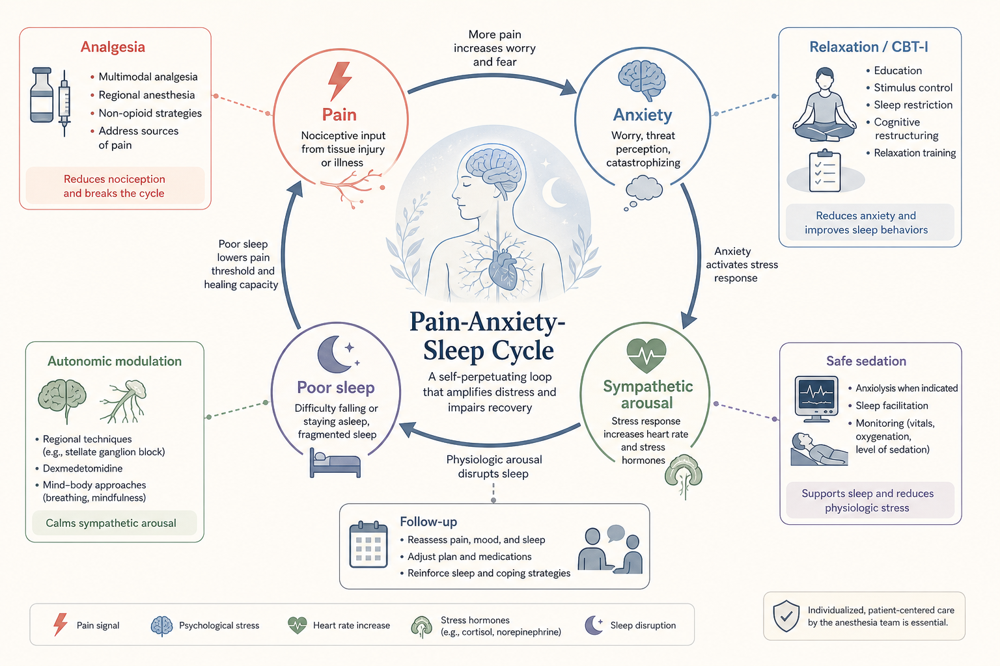
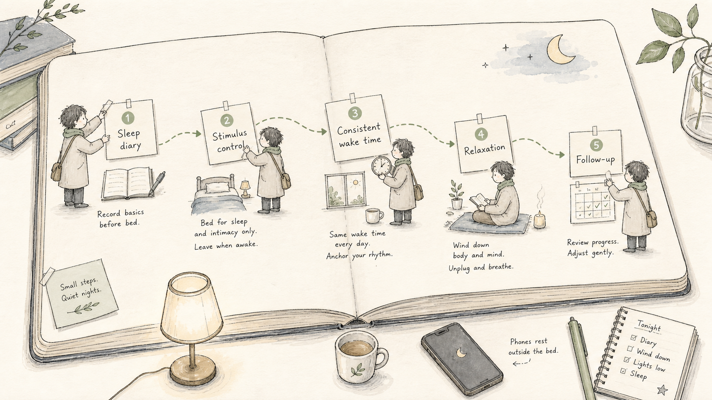
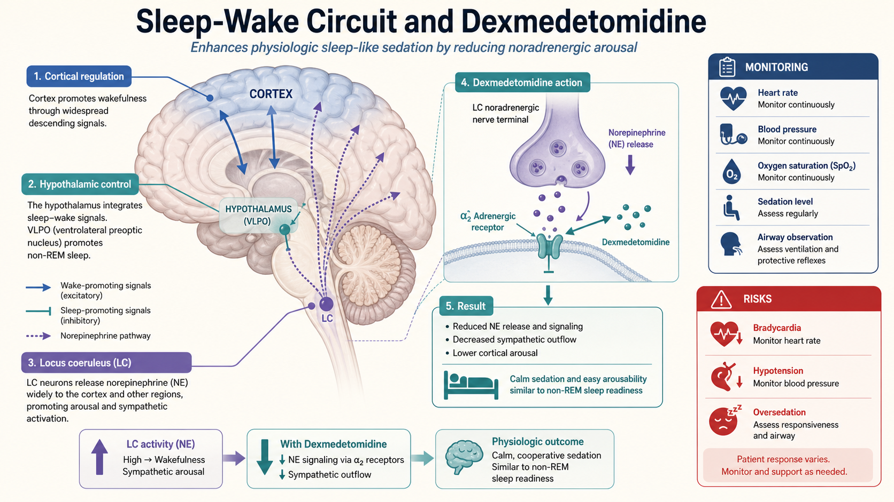
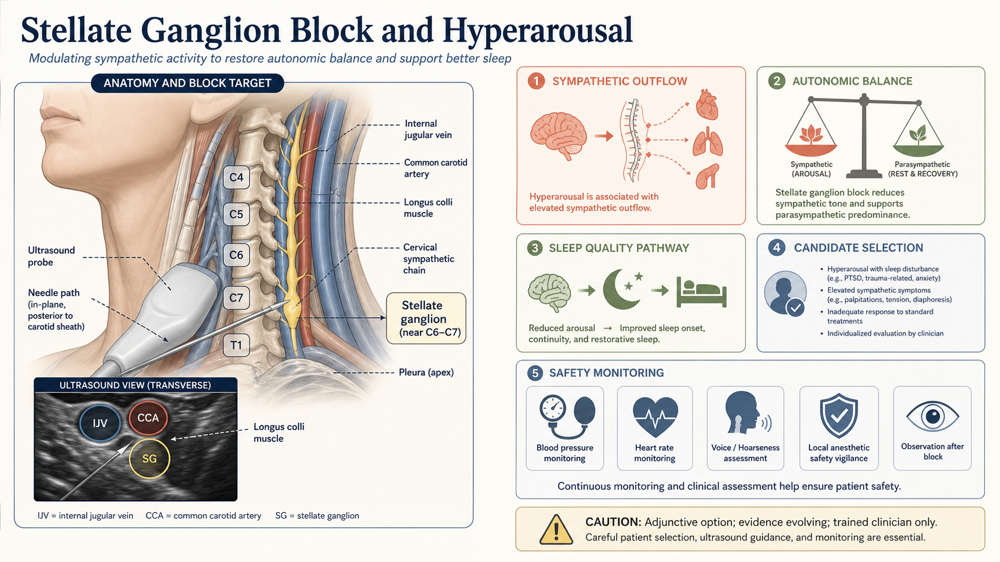
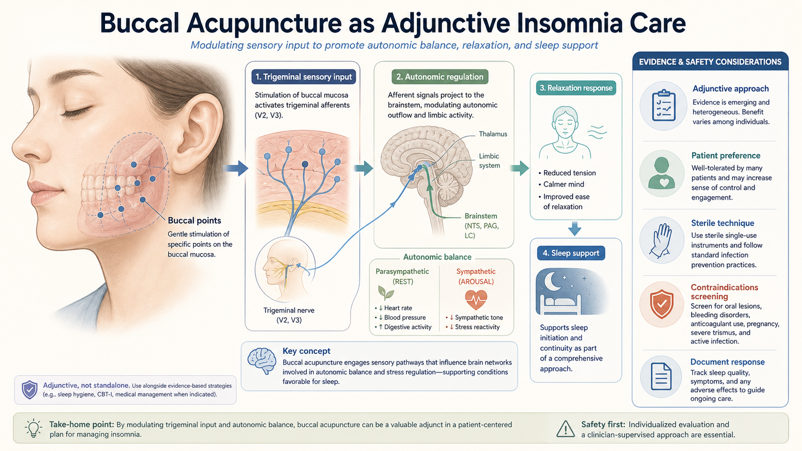
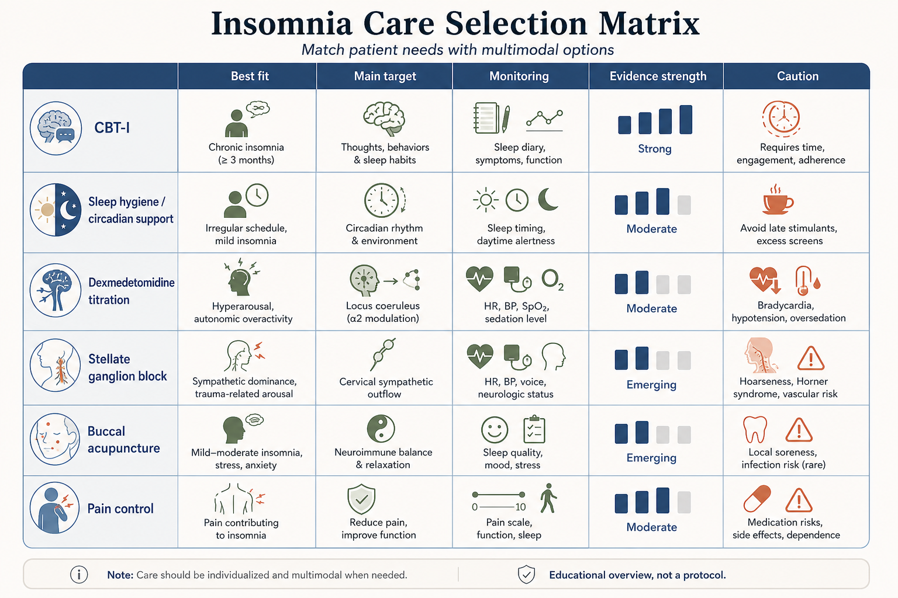
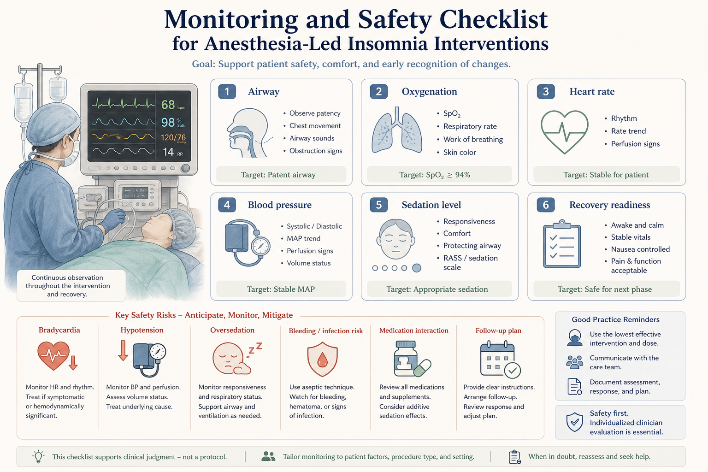
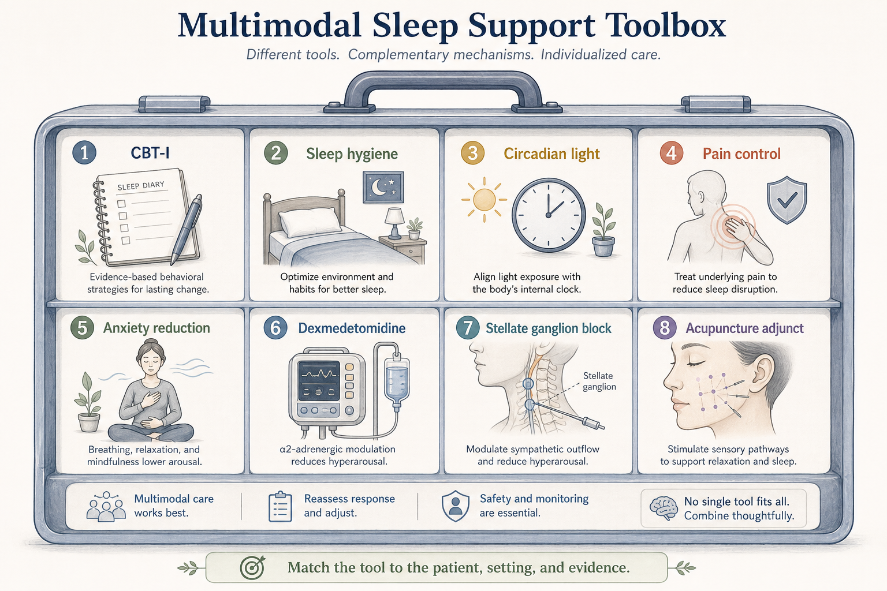
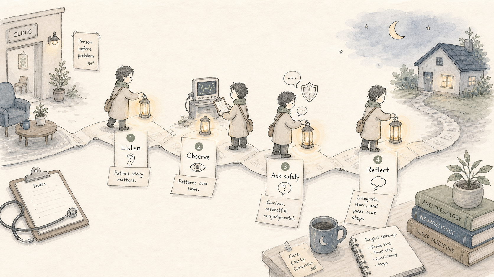
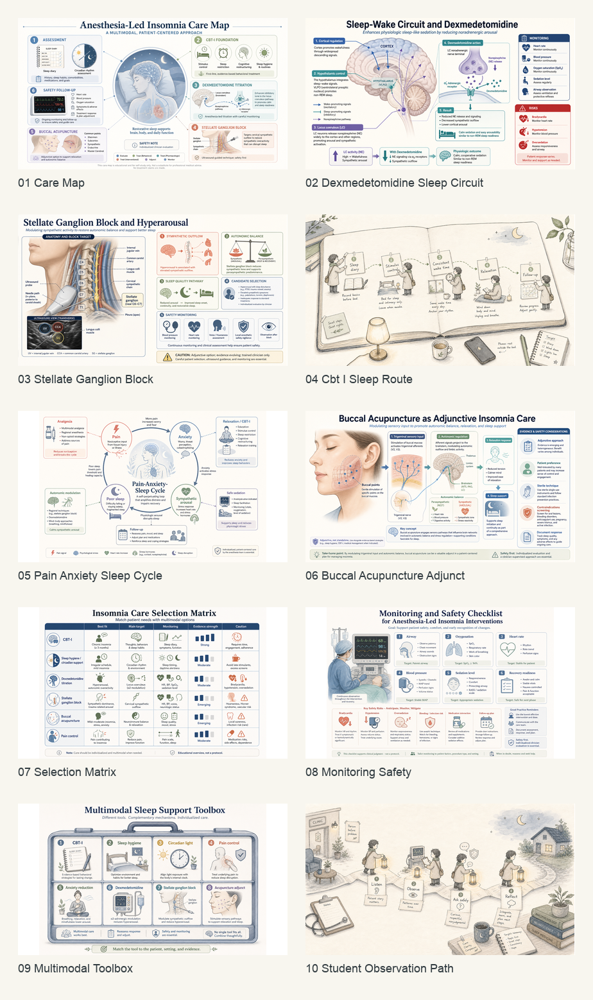

Ask safely
可以问：这个患者的失眠主要由疼痛、焦虑、节律紊乱还是高唤醒驱动？为什么选择这种辅助方式？如何监测安全？
Good questions: Is this insomnia driven by pain, anxiety, circadian disruption, or hyperarousal? Why choose this adjunct? How is safety monitored?
Sleep medicine · Anesthesiology · Integrative care
这是一份给 Cornell University 大一学生自学的入门课件。它解释麻醉科为什么会关注失眠，以及右美托咪定滴定、行为认知疗法、星状神经节阻滞、颊针和其他综合手段在失眠管理中的位置。
This self-guided course introduces why anesthesiologists may participate in selected insomnia care, including dexmedetomidine titration, cognitive behavioral therapy for insomnia, stellate ganglion block, buccal acupuncture, and multimodal sleep support.
本课件不提供个体化医疗建议、药物剂量或操作流程。它的目标是让初学者理解：麻醉科的优势在于监测、镇静、镇痛、自主神经调节和围术期风险管理，但每一种干预都需要评估适应证、禁忌证和随访。
This course does not provide individual medical advice, dosing, or procedural instructions. Its purpose is to help a beginner understand the anesthesiology perspective: monitoring, sedation, analgesia, autonomic modulation, and perioperative risk management all require patient selection and follow-up.
CBT-I 是慢性失眠的核心基础；右美托咪定、星状神经节阻滞和颊针更适合被理解为特定情境下的辅助或探索性工具，而不是通用答案。
CBT-I is a core foundation for chronic insomnia; dexmedetomidine, stellate ganglion block, and buccal acupuncture are better understood as selective or adjunctive tools, not universal answers.
识别失眠类型、持续时间、疼痛、焦虑、药物、睡眠呼吸问题和安全风险。
Identify insomnia pattern, duration, pain, anxiety, medications, sleep-disordered breathing, and safety risks.
先处理疼痛、焦虑、昼夜节律和不良睡眠行为。
Address pain, anxiety, circadian rhythm, and maladaptive sleep behaviors first.
根据患者、场景和证据强度选择合适工具。
Match the tool to the patient, setting, and evidence strength.
任何镇静、阻滞或针刺相关干预都要有监测、记录和复盘。
Any sedation, block, or needle-based intervention requires monitoring, documentation, and review.
很多患者不是简单地“不想睡”。疼痛、焦虑、交感兴奋和睡眠不足会相互放大。麻醉科参与失眠相关照护时，通常会从疼痛控制、焦虑降低、自主神经稳定和安全镇静几个方向切入。
Many patients are not simply “choosing not to sleep.” Pain, anxiety, sympathetic arousal, and poor sleep reinforce each other. Anesthesiology-related care often targets pain control, anxiety reduction, autonomic stability, and safe sedation.


右美托咪定是 alpha-2 受体激动剂，临床上常用于镇静、降低交感兴奋和减少焦虑样唤醒。对于失眠相关场景，它应被理解为需要严密监测的选择性工具，而不是普通助眠药。
Dexmedetomidine is an alpha-2 agonist used clinically for sedation, sympathetic attenuation, and reduced arousal. In insomnia-related settings, it should be understood as a monitored selective tool, not a routine sleeping pill.

需要特别关注心动过缓、低血压、过度镇静、气道安全和药物相互作用。本课件不提供剂量。
Pay attention to bradycardia, hypotension, oversedation, airway safety, and drug interactions. This course does not provide dosing.
星状神经节阻滞可以影响颈胸交感通路，因此在疼痛、应激、高唤醒状态和部分睡眠相关问题中受到关注。对初学者来说，重点不是记住操作，而是理解它为什么属于麻醉科的能力范围：解剖定位、超声引导、局麻药安全和术后观察。
Stellate ganglion block can influence cervical-thoracic sympathetic pathways, which is why it is discussed in pain, stress, hyperarousal, and selected sleep-related problems. For beginners, the goal is not to learn the procedure, but to understand why it belongs to anesthesiology: anatomy, ultrasound guidance, local anesthetic safety, and post-block observation.

颊针可以作为整合医学或辅助治疗的一部分介绍。教学时应避免把它说成“保证有效”。更稳妥的表达是：它可能通过感觉输入、放松反应、自主神经调节和患者偏好参与治疗过程，但需要规范操作、无菌意识、禁忌证筛查和效果记录。
Buccal acupuncture can be introduced as part of integrative or adjunctive care. It should not be framed as a guaranteed cure. A safer explanation is that sensory input, relaxation response, autonomic regulation, and patient preference may contribute, while sterile technique, contraindication screening, and response documentation remain essential.

失眠管理要看患者是谁、问题持续多久、是否合并疼痛或焦虑、是否存在睡眠呼吸障碍、是否正在服用影响睡眠或呼吸的药物，以及治疗场景是否具备监测条件。
Insomnia care depends on who the patient is, how long the problem has lasted, whether pain or anxiety is present, whether sleep-disordered breathing is possible, what medications are being used, and whether the care setting can provide monitoring.

麻醉科并不是只会“让人睡着”。更核心的能力是识别风险、维持氧合和循环稳定、观察镇静深度、处理不良反应并安排恢复和随访。
Anesthesiology is not simply about “making people sleep.” Its core value is risk recognition, oxygenation and circulation stability, sedation-depth observation, adverse-event response, recovery planning, and follow-up.

对多数失眠患者，真正有价值的往往是组合策略：睡眠卫生、固定起床时间、白天光照、疼痛控制、焦虑降低、放松训练、围术期环境管理、必要时药物或操作辅助。
For many patients, the most useful approach is a combination: sleep hygiene, consistent wake time, daytime light, pain control, anxiety reduction, relaxation training, perioperative environment management, and selected medication or procedural adjuncts when appropriate.

可以问：这个患者的失眠主要由疼痛、焦虑、节律紊乱还是高唤醒驱动？为什么选择这种辅助方式？如何监测安全？
Good questions: Is this insomnia driven by pain, anxiety, circadian disruption, or hyperarousal? Why choose this adjunct? How is safety monitored?
不要把观察到的单个患者改善直接理解为某种方法一定有效。医学学习需要区分机制、经验、证据和个体差异。
Do not turn one observed improvement into a universal claim. Medical learning separates mechanism, experience, evidence, and individual variation.

